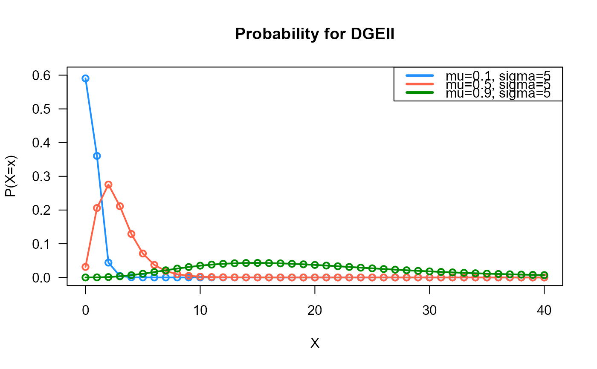
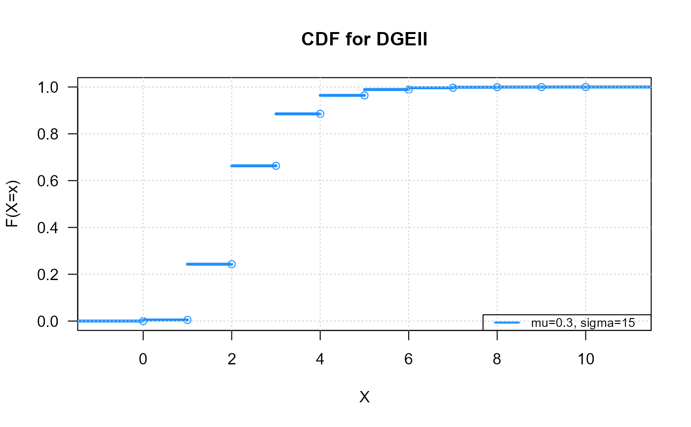
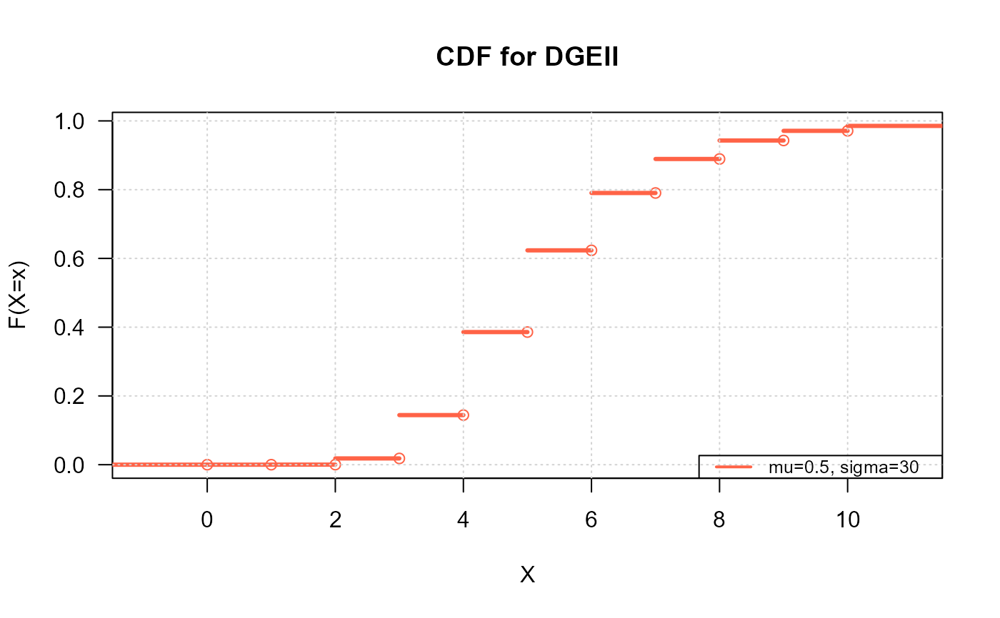
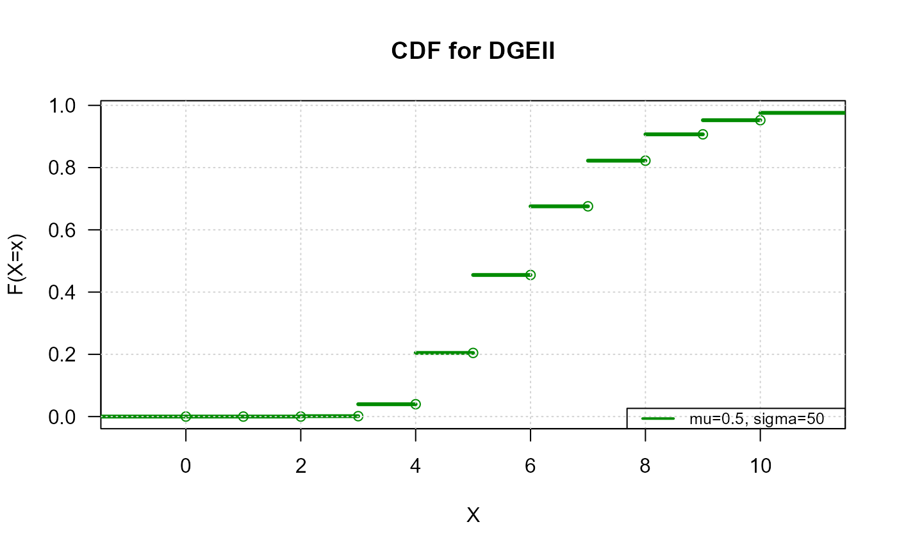
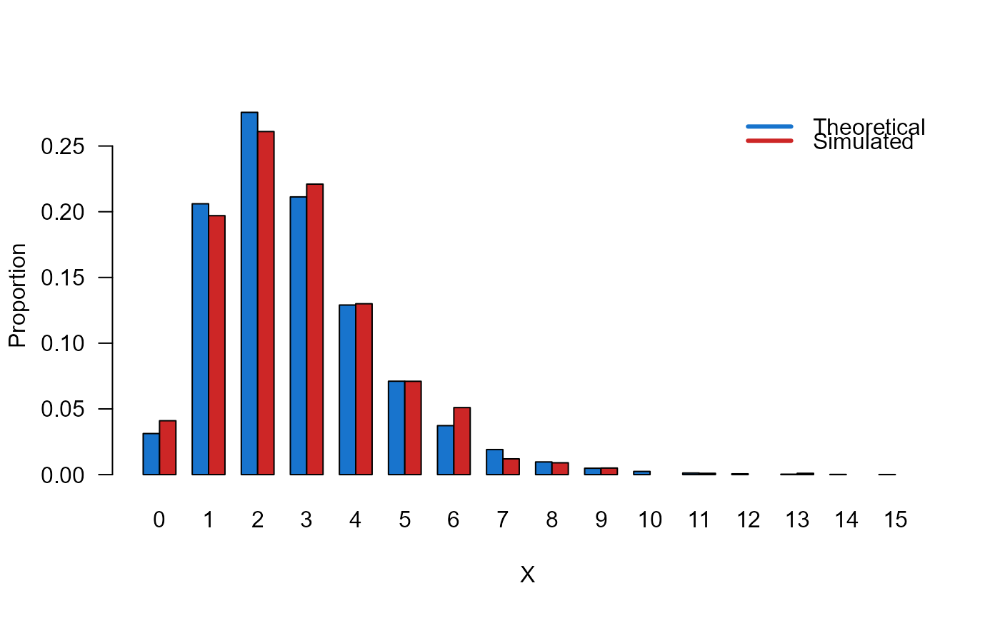
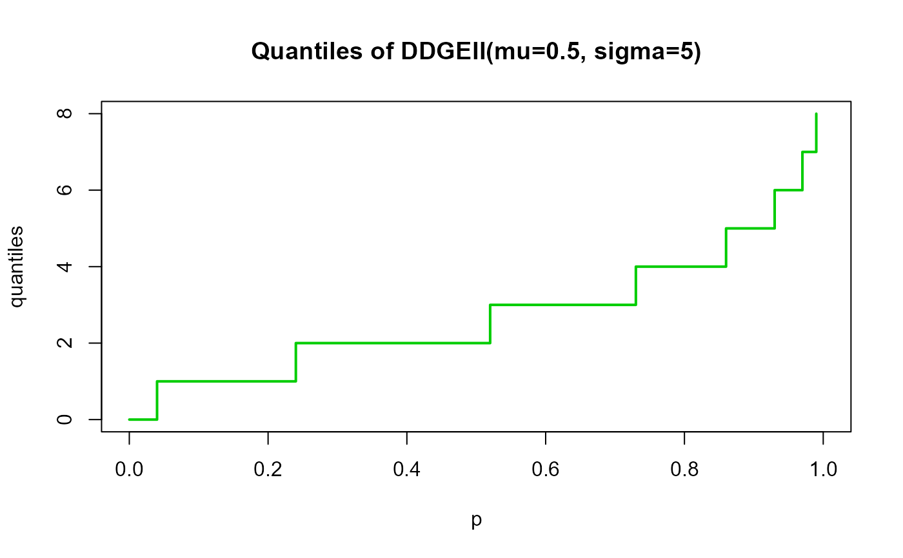

These functions define the density, distribution function, quantile function and random generation for the Discrete generalized exponential distribution a second type with parameters \(\mu\) and \(\sigma\).
dDGEII(x, mu = 0.5, sigma = 1.5, log = FALSE)
pDGEII(q, mu = 0.5, sigma = 1.5, lower.tail = TRUE, log.p = FALSE)
rDGEII(n, mu = 0.5, sigma = 1.5)
qDGEII(p, mu = 0.5, sigma = 1.5, lower.tail = TRUE, log.p = FALSE)vector of (non-negative integer) quantiles.
vector of the mu parameter.
vector of the sigma parameter.
logical; if TRUE, probabilities p are given as log(p).
logical; if TRUE (default), probabilities are \(P[X <= x]\), otherwise, \(P[X > x]\).
number of random values to return.
vector of probabilities.
dDGEII gives the density, pDGEII gives the distribution
function, qDGEII gives the quantile function, rDGEII
generates random deviates.
The DGEII distribution with parameters \(\mu\) and \(\sigma\) has a support 0, 1, 2, ... and mass function given by
\(f(x | \mu, \sigma) = (1-\mu^{x+1})^{\sigma}-(1-\mu^x)^{\sigma}\)
with \(0 < \mu < 1\) and \(\sigma > 0\). If \(\sigma=1\), the DGEII distribution reduces to the geometric distribution with success probability \(1-\mu\).
Note: in this implementation we changed the original parameters \(p\) to \(\mu\) and \(\alpha\) to \(\sigma\), we did it to implement this distribution within gamlss framework.
Nekoukhou, V., Alamatsaz, M. H., & Bidram, H. (2013). Discrete generalized exponential distribution of a second type. Statistics, 47(4), 876-887.
# Example 1
# Plotting the mass function for different parameter values
x_max <- 40
probs1 <- dDGEII(x=0:x_max, mu=0.1, sigma=5)
probs2 <- dDGEII(x=0:x_max, mu=0.5, sigma=5)
probs3 <- dDGEII(x=0:x_max, mu=0.9, sigma=5)
# To plot the first k values
plot(x=0:x_max, y=probs1, type="o", lwd=2, col="dodgerblue", las=1,
ylab="P(X=x)", xlab="X", main="Probability for DGEII",
ylim=c(0, 0.60))
points(x=0:x_max, y=probs2, type="o", lwd=2, col="tomato")
points(x=0:x_max, y=probs3, type="o", lwd=2, col="green4")
legend("topright", col=c("dodgerblue", "tomato", "green4"), lwd=3,
legend=c("mu=0.1, sigma=5",
"mu=0.5, sigma=5",
"mu=0.9, sigma=5"))

# Example 2
# Checking if the cumulative curves converge to 1
#plot1
x_max <- 10
plot_discrete_cdf(x=0:x_max,
fx=dDGEII(x=0:x_max, mu=0.3, sigma=15),
col="dodgerblue",
main="CDF for DGEII",
lwd=3)
legend("bottomright", legend="mu=0.3, sigma=15",
col="dodgerblue", lty=1, lwd=2, cex=0.8)

#plot2
plot_discrete_cdf(x=0:x_max,
fx=dDGEII(x=0:x_max, mu=0.5, sigma=30),
col="tomato",
main="CDF for DGEII",
lwd=3)
legend("bottomright", legend="mu=0.5, sigma=30",
col="tomato", lty=1, lwd=2, cex=0.8)

#plot3
plot_discrete_cdf(x=0:x_max,
fx=dDGEII(x=0:x_max, mu=0.5, sigma=50),
col="green4",
main="CDF for DGEII",
lwd=3)
legend("bottomright", legend="mu=0.5, sigma=50",
col="green4", lty=1, lwd=2, cex=0.8)

# Example 3
# Comparing the random generator output with
# the theoretical probabilities
x_max <- 15
probs1 <- dDGEII(x=0:x_max, mu=0.5, sigma=5)
names(probs1) <- 0:x_max
x <- rDGEII(n=1000, mu=0.5, sigma=5)
probs2 <- prop.table(table(x))
cn <- union(names(probs1), names(probs2))
height <- rbind(probs1[cn], probs2[cn])
nombres <- cn
mp <- barplot(height, beside=TRUE, names.arg=nombres,
col=c('dodgerblue3','firebrick3'), las=1,
xlab='X', ylab='Proportion')
legend('topright',
legend=c('Theoretical', 'Simulated'),
bty='n', lwd=3,
col=c('dodgerblue3','firebrick3'), lty=1)

# Example 4
# Checking the quantile function
mu <- 0.5
sigma <- 5
p <- seq(from=0, to=1, by=0.01)
qxx <- qDGEII(p=p, mu=mu, sigma=sigma, lower.tail=TRUE, log.p=FALSE)
plot(p, qxx, type="s", lwd=2, col="green3", ylab="quantiles",
main="Quantiles of DDGEII(mu=0.5, sigma=5)")
